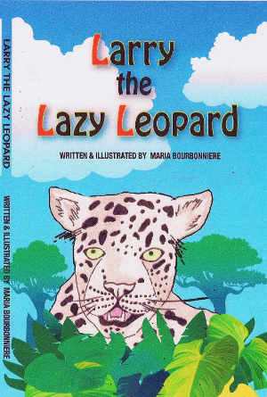

Published in 2010, Larry the Lazy Leopard is Maria's first book. Written shortly after the birth of her child, the story is a simple way to show children how important it is for them to try to do their very best, even if though they might not accomplish everything they set out to do.
The decision to use leopards in the story was due to their strong, confident look. Maria wondered if the leopards had doubts about their abilities, as humans do.
Where to find Larry the Lazy Leopard
Larry the Lazy Leopard is available in hardcover in most Canadian book stores and can be ordered online from international book sellers and through the following sellers:
- Amazon.com (also available as Kindle ebook)
- Amazon.ca (also available as Kindle ebook)
- Chapters and Indigo
- Barnes & Noble
- eBay.com